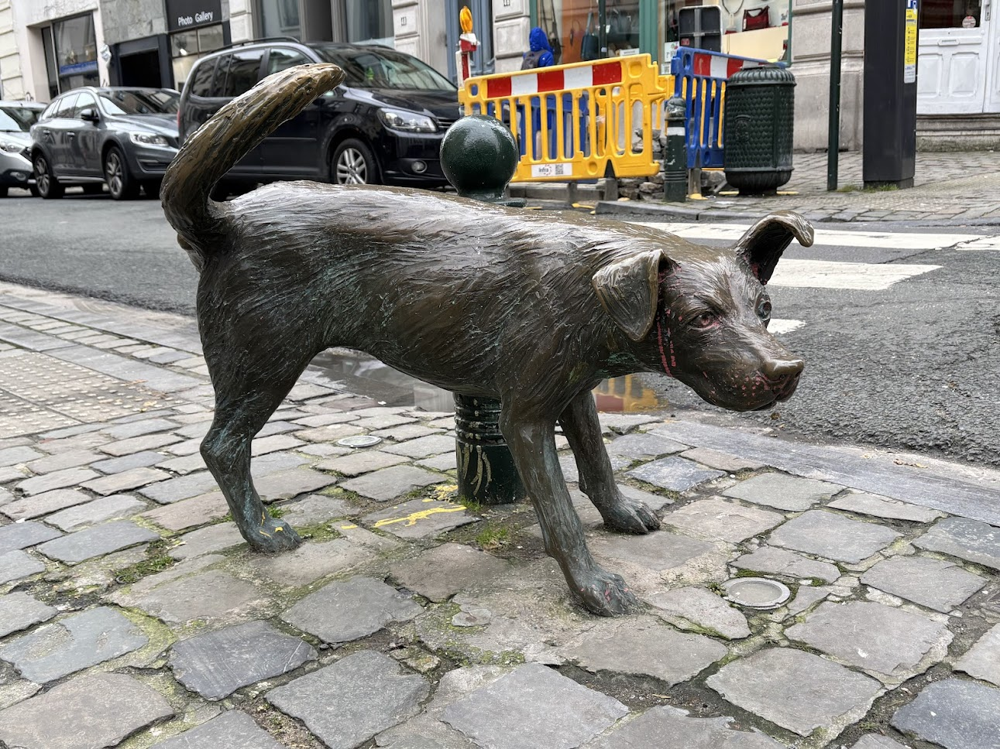

My First-Ever FOSDEM and First Time in Brussels
Last weekend, I went to FOSDEM for the first time—and it was also my first time in Belgium!
Brussels
Brussels is small but full of character. On my first night, I went for a walk around the city. It’s pretty flat and wide, with a beautiful historic center, stunning gothic churches, and tons of bars.
Beer
First mission upon arrival: find sour beer. I stopped by a place near my hotel, and they had amazing cherry beers! I spent the next few days trying all sorts of Belgian beers: Leffe (their typical lager) and plenty of delicious sour ones.
Peeing, Peeing, Peeing Everywhere
The next day, I went to check out Brussels’ famous peeing statues: the peeing boy, the peeing girl, and, yes, even a peeing dog! I was surprised by how small they were! I expected massive two-meter-tall statues, but they were twenty centimeters tall! Still, pretty funny to see many souvenirs with the peeing boy everywhere in the city.

Atomium
I visited the Atomium, and it was pretty cool! From the top, you get an amazing view of the whole city.
In the middle sections, there was a design museum. The most interesting part of it were the dimmed windows. They made the outside world look like a scene straight out of a post-apocalyptic movie.
About FOSDEM
FOSDEM is Europe’s biggest free and open-source conference with around 15,000 participants. Everyone kept saying it’s a unique experience that you have to try at least once, and I totally agree! I’m so glad I went because it felt completely different from other conferences I’ve attended.
There were people everywhere and queues for everything. Even the number of speakers was wild—1,082 in total! There weren’t any official social events or spaces for networking, so it’s definitely better if you already know people before coming.
The whole conference had a super nerdy vibe. I even bought myself a little LED badge that displays my name for 25 euros and it felt it fits right there.
Fun fact: A girl came up to me and asked if I program in Rust. I said no, why? She replied that due to my hair I look like a Rust programmer and she’s advertising a Rust event. Maybe this is a sign from the universe that I should finally start learning Rust…
My Talk
My talk was going well… until I tried to play a video. I hit play, and of course no audio. Great. I figured, okay, at least there are subtitles. But then people said they couldn’t read them and asked me to read them out loud. Have you ever tried reading subtitles in sync with a video? It’s impossible. You’re either too fast or too slow. It felt so awkward! Luckily, I ran out of time within a minute, and they kicked me out. I quickly wrapped up, thanked everyone, and let them know I’d be available for questions afterward. A few people stayed around and we chatted a bit about communities. That was very nice!
Lightning Talks
At the last minute, I saw an open slot in the Python devroom, so I signed up for a lightning talk. My talk was called “A week of all things peeing Python.” I talked about differences between Brussels and Prague. And guess what? There aren’t so many! Both have beautiful churches, great beer, and… peeing sculptures. Beer in Prague is six times cheaper, though. And EuroPython is more fun.
Other Talks
I didn’t get to see many other talks because the whole event was huge and kind of overwhelming. I did catch a talk on the current state of Django by Thibaud Colas (Chair of the Django Software Foundation), which I really enjoyed. I also watched one keynote from the organization Let’s Encrypt and stayed for the closing session since I was curious about the final stats.
Unfortunately, I didn’t manage to attend as many talks as I wanted, but maybe next time!